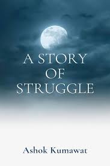
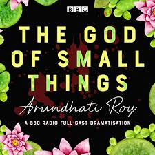
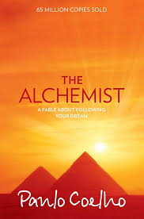
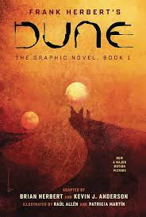
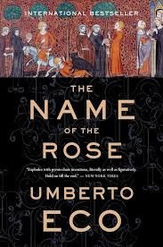

|  |
Author: R.K Narayan Genre: Fiction Year: 1956 Summary: Stories of Struggle is a collection of accounts of some of the lesser-known
Civil Rights activists spanning from the 1930s to the 1960s in South Carolina.
Rating: 4.5/5 |
|  |
Author: Arundhati Roy Genre: Fiction Year: 1997 Summary: Arundhati Roy (born 1961) became an international sensation with the publication
of The God of Small Things, her debut novel, in 1997.
Rating: 4.0/5 |
|  |
Author: Paulo Coelho Genre: Fiction Year: 1988 Summary: The story is about a Shepherd boy from Spain whose name is Santiago. He keeps
getting the same dream about treasures that are lying in the
Rating: 4.8/5 |
|  |
Author: Frank Herbert Genre: Science Fiction Year: 1965 Summary: Set on the desert planet Arrakis, Dune is the story of the boy Paul Atreides,
heir to a noble family tasked with ruling an inhospitable world where the only
Rating: 3.8/5 |
|  |
Author: Umberto Eco Genre: Historical Fiction Year: 1980 Summary: The Name of the Rose is plodding and complex. It does not have the pace of a
murder mystery and that’s because it’s actually much more of a historical novel Rating: 4.2/5 |